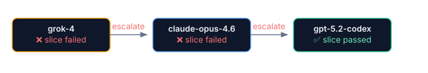
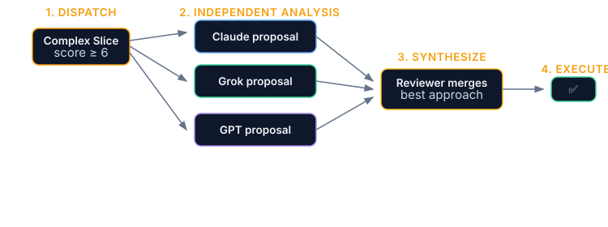

Advanced Execution
Model routing, quorum mode, cost optimization, CI integration, and resume strategies.
Model Routing
Assign different models per role in .forge.json:
Same principle as a human team: let the junior do the legwork, the senior does the final check. Costs less, catches more.
{
"modelRouting": {
"default": "grok-4",
"execute": "claude-sonnet-4.6",
"review": "claude-opus-4.6"
}
}Use a fast/cheap model for execution and a more capable model for review. The orchestrator routes each slice to the appropriate model based on its role.
Escalation Chains
When a model fails a slice, the orchestrator automatically escalates to the next model in the chain:
{
"escalationChain": ["grok-4", "claude-opus-4.6", "gpt-5.2-codex"]
}Model A fails → Model B retries the same slice → Model C if B fails too. Emits slice-escalated WebSocket event at each step. No manual intervention required.

Quorum Mode
Multi-model consensus for complex slices. Multiple models analyze the same problem independently, then a reviewer synthesizes the best approach.

# Force quorum on all slices
pforge run-plan docs/plans/Phase-7.md --quorum
# Auto-quorum: only trigger for complex slices (threshold ≥ 6)
pforge run-plan docs/plans/Phase-7.md --quorum=auto
# Custom threshold (1-10, higher = fewer slices use quorum)
pforge run-plan docs/plans/Phase-7.md --quorum=auto --quorum-threshold 8
# Flagship preset (Opus + GPT-5.3-Codex + Grok 4.20, threshold 5)
pforge run-plan docs/plans/Phase-7.md --quorum=power
# Fast preset (Sonnet + GPT-5.4-mini + Grok 4.1 Fast, threshold 7)
pforge run-plan docs/plans/Phase-7.md --quorum=speed| Setting | Effect | Cost Impact |
|---|---|---|
--quorum | Every slice gets multi-model consensus | 3× normal cost |
--quorum=auto | Only slices above complexity threshold | 1.2–1.5× normal cost |
--quorum=power | Flagship models (Opus + GPT-5.3-Codex + Grok 4.20), threshold 5, 5min timeout | 3× at threshold 5 |
--quorum=speed | Fast models (Sonnet + GPT-5.4-mini + Grok 4.1 Fast), threshold 7, 2min timeout | 1.5× at threshold 7 |
| No flag | Single model per slice | 1× baseline cost |
Cost Optimization
The orchestrator tracks model performance in .forge/model-performance.json — success rate, average cost, and duration per model. It auto-selects the cheapest model with >80% historical pass rate.
- Preview costs:
pforge run-plan --estimate docs/plans/Phase-7.md - Review spend:
pforge costor Dashboard Cost tab - Agent-per-slice routing: Override model per slice with
--modelflag - Reduce context: Use targeted
Context:lists per slice (see Chapter 5)
API Key Configuration
API keys for external providers (xAI Grok, OpenAI) are resolved in order: environment variable → .forge/secrets.json → null.
For local development, store keys in the gitignored .forge/secrets.json:
{
"XAI_API_KEY": "xai-...",
"OPENAI_API_KEY": "sk-..."
}The .forge/ directory is in .gitignore by default — secrets are never committed.
CI Integration
Add Plan Forge validation to your GitHub Actions PR workflow:
- uses: srnichols/plan-forge-validate@v1
with:
analyze: true # Run consistency scoring
sweep: true # Check for TODO/FIXME markers
threshold: 60 # Minimum analyze score to passPRs that fail the threshold are blocked from merging. The action validates file counts, checks for unresolved placeholders, and runs pforge analyze.
Cloud Agent Execution
GitHub's Copilot cloud agent works on issues autonomously. Plan Forge integrates via .github/copilot-setup-steps.yml, which provisions the agent with Node.js, guardrails, MCP tools, and smith verification before it starts coding.
Parallel Execution
The orchestrator builds a DAG from [P] tags and [depends: Slice N] declarations. Independent slices run concurrently when workers are available. Merge checkpoints validate that all parallel branches resolved cleanly.
[scope:] paths, the orchestrator flags the conflict before execution starts.
Resume and Retry
# Resume from slice 3 after fixing a failure
pforge run-plan docs/plans/Phase-7.md --resume-from 3
# Dry run — parse and validate without executing
pforge run-plan docs/plans/Phase-7.md --dry-runWhen a gate fails, fix the issue manually, then resume. Completed slices are skipped — only remaining slices execute.
OpenBrain Memory
The OpenBrain integration bridges the 3-session model with long-term context. Prior decisions, patterns, and postmortems are automatically searched and injected at the start of each session. After every run, lessons are captured for future phases.
Install via extension: pforge ext add plan-forge-memory
LiveGuard Lifecycle Hooks (v2.29)
Three hooks fire automatically during agent sessions to enforce operational safety:
| Hook | Trigger | Behavior | Blocking |
|---|---|---|---|
| PreDeploy | Before deploy-related file writes or commands | Runs forge_secret_scan + forge_env_diff — blocks on findings | Yes |
| PostSlice | After every slice commit | Runs forge_drift_report — warns on drift regression | No (advisory) |
| PreAgentHandoff | At session start when resuming work | Injects LiveGuard context into agent prompt | No |
Configure in .forge.json:
{
"hooks": {
"preDeploy": { "blockOnSecrets": true, "warnOnEnvGaps": true, "scanSince": "HEAD~1" },
"postSlice": { "silentDeltaThreshold": 5, "warnDeltaThreshold": 10, "scoreFloor": 70 },
"preAgentHandoff": { "injectContext": true, "cacheMaxAgeMinutes": 30, "minAlertSeverity": "medium" }
}
}See Chapter 15 — What Is LiveGuard? for the full operational intelligence overview.
📄 Full reference: capabilities.md, CLI-GUIDE.md → run-plan